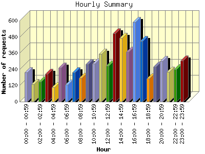
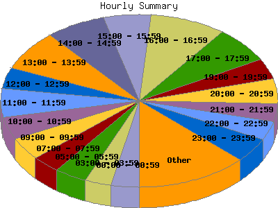

Report generated by Analog 5.91beta1 and Report Magic 2.21
|
Web Server Statistics for "Harish Narayanan (hnarayan) - January 2005" Report generated by Analog 5.91beta1 and Report Magic 2.21 |
The Hourly Summary identifies the level of activity broken down by each hour. Remember that one page hit can result in several server requests as the images for each page are loaded. This summary also compares the level of activity during working hours and after hours as a total for the report time frame.


| Hour | Number of requests | Number of bytes transferred | Percentage of the bytes | Percentage of the requests | |
|---|---|---|---|---|---|
| 1. | 00:00 - 00:59 | 216 | 8.863 MB | 2.11% | 3.26% |
| 2. | 01:00 - 01:59 | 131 | 4.610 MB | 1.10% | 1.98% |
| 3. | 02:00 - 02:59 | 149 | 6.466 MB | 1.54% | 2.25% |
| 4. | 03:00 - 03:59 | 205 | 7.117 MB | 1.69% | 3.09% |
| 5. | 04:00 - 04:59 | 108 | 3.528 MB | 0.84% | 1.63% |
| 6. | 05:00 - 05:59 | 251 | 72.580 MB | 17.28% | 3.79% |
| 7. | 06:00 - 06:59 | 124 | 8.883 MB | 2.12% | 1.87% |
| 8. | 07:00 - 07:59 | 217 | 12.694 MB | 3.02% | 3.27% |
| 9. | 08:00 - 08:59 | 176 | 8.235 MB | 1.96% | 2.65% |
| 10. | 09:00 - 09:59 | 279 | 8.860 MB | 2.11% | 4.21% |
| 11. | 10:00 - 10:59 | 282 | 21.042 MB | 5.01% | 4.25% |
| 12. | 11:00 - 11:59 | 352 | 16.842 MB | 4.01% | 5.31% |
| 13. | 12:00 - 12:59 | 266 | 11.851 MB | 2.82% | 4.01% |
| 14. | 13:00 - 13:59 | 504 | 15.569 MB | 3.71% | 7.60% |
| 15. | 14:00 - 14:59 | 469 | 81.820 MB | 19.48% | 7.07% |
| 16. | 15:00 - 15:59 | 369 | 14.136 MB | 3.37% | 5.56% |
| 17. | 16:00 - 16:59 | 590 | 33.790 MB | 8.04% | 8.90% |
| 18. | 17:00 - 17:59 | 450 | 12.481 MB | 2.97% | 6.79% |
| 19. | 18:00 - 18:59 | 171 | 6.406 MB | 1.52% | 2.58% |
| 20. | 19:00 - 19:59 | 259 | 8.016 MB | 1.91% | 3.90% |
| 21. | 20:00 - 20:59 | 301 | 8.497 MB | 2.02% | 4.54% |
| 22. | 21:00 - 21:59 | 222 | 16.453 MB | 3.92% | 3.35% |
| 23. | 22:00 - 22:59 | 239 | 21.260 MB | 5.06% | 3.60% |
| 24. | 23:00 - 23:59 | 302 | 10.029 MB | 2.39% | 4.55% |
| Work Hours (8:00am-4:59pm) | 3,287 | 212.146 MB | 50.51% | 49.56% | |
| After Hours (5:00pm-7:59am) | 3,345 | 207.884 MB | 49.49% | 50.44% | |
This report was generated on February 1, 2005 19:38.
Report time frame January 1, 2005 00:39 to January 31, 2005 23:55.
| Web statistics report produced by: | |
 Analog 5.91beta1 Analog 5.91beta1 |  Report Magic 2.21 Report Magic 2.21 |